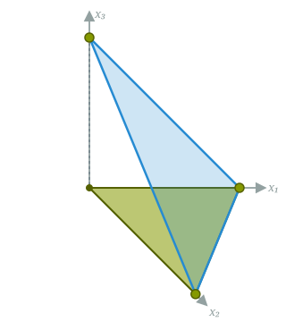
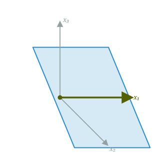

Introduction to Optimization
CO 250
Lecture 11
Kevin Shu
Lecture Outline
- Two Phase Simplex Method Review
- Geometry of Polytopes
Two Phase Simplex Method

Ratio test: look at the column of $A$ associated to the entering variable, and find the positive entries in it (if there are none, then the LP is infeasible). For each positive entry, look at the corresponding entry of $b$, divide it by the entry of $A$ and then take some$^*$ row with the minimum ratio. That row corresponds to the leaving basic variable.
If there are multiple rows which have the same minimum ratio, any of them could potentially leave; Bland's rule says to take the one of them that has the smallest index.
Two Phase Simplex Algorithm
Given a linear program, how do we check that it is feasible?
| maximize | $c^{\intercal}x$ |
| such that | $Ax = b$ |
| $x \ge 0$ |
We can rewrite an equivalent LP with $b \ge 0$ by negating some of the equations.
Two Phase Simplex Algorithm
Starting with an LP in SEF with $b \ge 0$, we can write down the auxilliary LP
| maximize | $c^{\intercal}x$ |
| such that | $Ax = b$ |
| $x \ge 0$ |
| maximize | $-\sum_{i=1}^m s_i$ |
| such that | $Ax + s = b$ |
| $x,s \ge 0$ |
$m$ is the number of equations (the number of rows of $A$).
The auxilliary LP is always feasible and its optimal value is 0 if and only if the original LP was feasible.
Two Phase Simplex Algorithm
Mechanically, the new LP is defined from the old components via the new matrices/vectors
\[ \color{#bd17fe}{A'} = \begin{pmatrix} A & I \end{pmatrix}\qquad \color{#bd17fe}{b'} = b\qquad \color{#bd17fe}{c'}^{\intercal} = (\vec{0}_n, -\vec{1}_m) \]
where $\vec{1}_m$ is the all one's vector of length $m$, and $\vec{0}_n$ is the all zeros vector of length $n$.
Note that $\color{#bd17fe}{A'}^{\intercal} \vec{1} = (A^{\intercal}\vec{1}_m, \vec{1}_m)$, and the following LP is in canonical form whose basis is the auxilliary variables $\{x_{n+1},\dots,x_{n+m}\}$.
| maximize | $(A^{\intercal}\vec{1}, \vec{0}_m)^{\intercal}x' - b^{\intercal}\vec{1}_m$ |
| such that | $A'x' = b$ |
| $x' \ge 0$ |
$x'$ is a new vector of length $m+n$.
Example
Original LP
| max | $\begin{pmatrix} 3 & 2 & 1 \end{pmatrix} x$ |
| s.t. | $\begin{pmatrix} 1 & 1 & 2 \\ 2 & 1 & 1 \end{pmatrix} x = \begin{pmatrix} 4 \\ 5 \end{pmatrix}$ |
| $x \ge 0$ |
Auxiliary LP
| max | $\begin{pmatrix} 0 & 0 & 0 & -1 & -1 \end{pmatrix} x'$ |
| s.t. | $\begin{pmatrix} 1 & 1 & 2 & 1 & 0 \\ 2 & 1 & 1 & 0 & 1 \end{pmatrix} x' = \begin{pmatrix} 4 \\ 5 \end{pmatrix}$ |
| $x' \ge 0$ |
| max | $\begin{pmatrix} 3 & 2 & 3 & \color{blue}0 & \color{blue}0 \end{pmatrix} x' - 9$ |
| s.t. | $\begin{pmatrix} 1 & 1 & 2 & \color{blue}1 & \color{blue}0 \\ 2 & 1 & 1 & \color{blue}0 & \color{blue}1 \end{pmatrix} x' = \begin{pmatrix} 4 \\ 5 \end{pmatrix}$ |
| $x' \ge 0$ |
Phase 1 — Iteration 1
We start in canonical form with respect to the basis $\color{blue}{\{4,5\}}$:
| max | $\begin{pmatrix} 3 & 2 & 3 & \color{blue}0 & \color{blue}0 \end{pmatrix} x' - 9$ |
| s.t. | $\begin{pmatrix} 1 & 1 & 2 & \color{blue}1 & \color{blue}0 \\ 2 & 1 & 1 & \color{blue}0 & \color{blue}1 \end{pmatrix} x' = \begin{pmatrix} 4 \\ 5 \end{pmatrix}$ |
| $x' \ge 0$ |
The positive objective coefficients are $\{x_1, x_2, x_3\}$; Bland's rule enters the smallest index, $x_1$.
Ratio test on $A_1 = \begin{pmatrix}1\\2\end{pmatrix}$: $\tfrac{4}{1} = 4$ (row $\color{blue}{x_4}$), $\tfrac{5}{2}$ (row $\color{blue}{x_5}$). The minimum is $\tfrac{5}{2}$, so $x_5$ leaves.
Phase 1 — Iteration 1
\[ \begin{pmatrix} \color{red}2 & 1 & 1 & \color{blue}0 & \color{green}1 \\ \color{red}1 & 1 & 2 & \color{blue}1 & \color{green}0 \end{pmatrix} x' = \begin{pmatrix} 5 \\ 4 \end{pmatrix} \] \[ \downarrow_{\ \rho_1 \,=\, \frac{1}{2}\rho_1} \] \[ \begin{pmatrix} \color{red}1 & \tfrac{1}{2} & \tfrac{1}{2} & \color{blue}0 & \color{green}{\tfrac{1}{2}} \\ \color{red}1 & 1 & 2 & \color{blue}1 & \color{green}0 \end{pmatrix} x' = \begin{pmatrix} \tfrac{5}{2} \\ 4 \end{pmatrix} \] \[ \downarrow_{\ \rho_2 \,=\, \rho_2 - \rho_1} \] \[ \begin{pmatrix} \color{red}1 & \tfrac{1}{2} & \tfrac{1}{2} & \color{blue}0 & \color{green}{\tfrac{1}{2}} \\ \color{red}0 & \tfrac{1}{2} & \tfrac{3}{2} & \color{blue}1 & \color{green}{-\tfrac{1}{2}} \end{pmatrix} x' = \begin{pmatrix} \tfrac{5}{2} \\ \tfrac{3}{2} \end{pmatrix} \]
Phase 1 — Iteration 1
| max | $\begin{pmatrix} \color{red}3 & 2 & 3 & \color{blue}0 & \color{green}0 \end{pmatrix} x' - 9$ |
| s.t. | $\begin{pmatrix} \color{red}1 & \tfrac{1}{2} & \tfrac{1}{2} & \color{blue}0 & \color{green}{\tfrac{1}{2}} \\ \color{red}0 & \tfrac{1}{2} & \tfrac{3}{2} & \color{blue}1 & \color{green}{-\tfrac{1}{2}} \end{pmatrix} x' = \begin{pmatrix} \tfrac{5}{2} \\ \tfrac{3}{2} \end{pmatrix}$ |
| $x' \ge 0$ |
First equation says that $\begin{pmatrix} \color{red}1 & \tfrac{1}{2} & \tfrac{1}{2} & \color{blue}0 & \color{green}{\tfrac{1}{2}}\end{pmatrix}x' - \frac{5}2 = 0$, so we can subtract this from the objective:
\[ \begin{aligned} &\left(\begin{pmatrix} \color{red}3 & 2 & 3 & \color{blue}0 & \color{green}0 \end{pmatrix} x' - 9\right)\\ - &3\left(\begin{pmatrix} \color{red}1 & \tfrac{1}{2} & \tfrac{1}{2} & \color{blue}0 & \color{green}{\tfrac{1}{2}}\end{pmatrix}x' - \frac{5}2\right)\\ =& \begin{pmatrix} \color{blue}0 & \tfrac{1}{2} & \tfrac{3}{2} & \color{blue}0 & -\tfrac{3}{2} \end{pmatrix} x' - \tfrac{3}{2} \end{aligned} \]
Phase 1 — Iteration 1
| max | $\begin{pmatrix} \color{blue}0 & \tfrac{1}{2} & \tfrac{3}{2} & \color{blue}0 & -\tfrac{3}{2} \end{pmatrix} x' - \tfrac{3}{2}$ |
| s.t. | $\begin{pmatrix} \color{blue}1 & \tfrac{1}{2} & \tfrac{1}{2} & \color{blue}0 & \tfrac{1}{2} \\ \color{blue}0 & \tfrac{1}{2} & \tfrac{3}{2} & \color{blue}1 & -\tfrac{1}{2} \end{pmatrix} x' = \begin{pmatrix} \tfrac{5}{2} \\ \tfrac{3}{2} \end{pmatrix}$ |
| $x' \ge 0$ |
Phase 1 — Iteration 2
Canonical form with respect to $\color{blue}{\{1,4\}}$, basic feasible solution $x' = \left(\tfrac{5}{2},0,0,\tfrac{3}{2},0\right)$, objective value $-\tfrac{3}{2}$:
| max | $\begin{pmatrix} \color{blue}0 & \tfrac{1}{2} & \tfrac{3}{2} & \color{blue}0 & -\tfrac{3}{2} \end{pmatrix} x' - \tfrac{3}{2}$ |
| s.t. | $\begin{pmatrix} \color{blue}1 & \tfrac{1}{2} & \tfrac{1}{2} & \color{blue}0 & \tfrac{1}{2} \\ \color{blue}0 & \tfrac{1}{2} & \tfrac{3}{2} & \color{blue}1 & -\tfrac{1}{2} \end{pmatrix} x' = \begin{pmatrix} \tfrac{5}{2} \\ \tfrac{3}{2} \end{pmatrix}$ |
| $x' \ge 0$ |
The positive objective coefficients are $\{x_2, x_3\}$; Bland's rule enters $x_2$.
Ratio test on $A_2 = \begin{pmatrix}\tfrac{1}{2}\\\tfrac{1}{2}\end{pmatrix}$: $\tfrac{5/2}{1/2} = 5$ (row $\color{blue}{x_1}$), $\tfrac{3/2}{1/2} = 3$ (row $\color{blue}{x_4}$). The minimum is $3$, so $x_4$ leaves.
Phase 1 — Iteration 2
\[ \begin{pmatrix} \color{blue}1 & \color{red}{\tfrac{1}{2}} & \tfrac{1}{2} & \color{green}0 & \tfrac{1}{2} \\ \color{blue}0 & \color{red}{\tfrac{1}{2}} & \tfrac{3}{2} & \color{green}1 & -\tfrac{1}{2} \end{pmatrix} x' = \begin{pmatrix} \tfrac{5}{2} \\ \tfrac{3}{2} \end{pmatrix} \] \[ \downarrow_{\ \rho_2 \,=\, 2\rho_2} \] \[ \begin{pmatrix} \color{blue}1 & \color{red}{\tfrac{1}{2}} & \tfrac{1}{2} & \color{green}0 & \tfrac{1}{2} \\ \color{blue}0 & \color{red}1 & 3 & \color{green}2 & -1 \end{pmatrix} x' = \begin{pmatrix} \tfrac{5}{2} \\ 3 \end{pmatrix} \] \[ \downarrow_{\ \rho_1 \,=\, \rho_1 - \frac{1}{2}\rho_2} \] \[ \begin{pmatrix} \color{blue}1 & \color{red}0 & -1 & \color{green}{-1} & 1 \\ \color{blue}0 & \color{red}1 & 3 & \color{green}2 & -1 \end{pmatrix} x' = \begin{pmatrix} 1 \\ 3 \end{pmatrix} \]
Phase 1 — Iteration 2
Canonical form with respect to $\color{blue}{\{1,4\}}$, basic feasible solution $x' = \left(\tfrac{5}{2},0,0,\tfrac{3}{2},0\right)$, objective value $-\tfrac{3}{2}$:
| max | $\begin{pmatrix} \color{blue}0 & \tfrac{1}{2} & \tfrac{3}{2} & \color{blue}0 & -\tfrac{3}{2} \end{pmatrix} x' - \tfrac{3}{2}$ |
| s.t. | $ \begin{pmatrix} \color{blue}1 & \color{red}0 & -1 & \color{green}{-1} & 1 \\ \color{blue}0 & \color{red}1 & 3 & \color{green}2 & -1 \end{pmatrix} x' = \begin{pmatrix} 1 \\ 3 \end{pmatrix} $ |
| $x' \ge 0$ |
Second equation says that $\begin{pmatrix} \color{blue}0 & \color{red}1 & 3 & \color{green}2 & -1 \end{pmatrix}x' - 3 = 0$, so we can subtract this from the objective:
\[ \begin{aligned} &\left(\begin{pmatrix} \color{blue}0 & \color{red}{\tfrac{1}{2}} & \tfrac{3}{2} & \color{blue}0 & -\tfrac{3}{2} \end{pmatrix} x' - \tfrac{3}{2}\right)\\ - &\tfrac{1}{2}\left(\begin{pmatrix} \color{blue}0 & \color{red}1 & 3 & \color{green}2 & -1 \end{pmatrix}x' - 3\right)\\ =& \begin{pmatrix} \color{blue}0 & \color{blue}0 & 0 & -1 & -1 \end{pmatrix} x' - 0 \end{aligned} \]
Phase 1 — Iteration 3
This gives the canonical form with respect to $\color{blue}{\{1,2\}}$ (sorted), with basic feasible solution $x' = (1,3,0,0,0)$ and objective value $0$:
| max | $\begin{pmatrix} \color{blue}0 & \color{blue}0 & 0 & -1 & -1 \end{pmatrix} x'$ |
| s.t. | $\begin{pmatrix} \color{blue}1 & \color{blue}0 & -1 & -1 & 1 \\ \color{blue}0 & \color{blue}1 & 3 & 2 & -1 \end{pmatrix} x' = \begin{pmatrix} 1 \\ 3 \end{pmatrix}$ |
| $x' \ge 0$ |
The objective has no positive coefficient, so phase 1 is optimal with value $0$. The artificial variables $x_4, x_5$ are both $0$, so the original LP is feasible, and $\{x_1, x_2\}$ is a starting basis for phase 2.
Phase 2 — Setup
Drop the artificial variables $x_4, x_5$ and restore the original objective $\max\ 3x_1 + 2x_2 + x_3$. Phase 1 ended at the basis $\color{blue}{\{1,2\}}$, which we use to start phase 2.
Taking the phase-1 constraint rows (restricted to $x_1, x_2, x_3$) already in canonical form with respect to $\color{blue}{\{1,2\}}$:
| max | $\begin{pmatrix} 3 & 2 & 1 \end{pmatrix} x$ |
| s.t. | $\begin{pmatrix} \color{blue}1 & \color{blue}0 & -1 \\ \color{blue}0 & \color{blue}1 & 3 \end{pmatrix} x = \begin{pmatrix} 1 \\ 3 \end{pmatrix}$ |
| $x \ge 0$ |
The objective is not yet reduced: the basic variables $x_1, x_2$ still have nonzero coefficients.
Phase 2 — Optimal
Reduce the objective so the basic variables $x_1, x_2$ have zero coefficients. This gives the canonical form with respect to $\color{blue}{\{1,2\}}$, with basic feasible solution $x = (1,3,0)$ and objective value $9$:
| max | $\begin{pmatrix} \color{blue}0 & \color{blue}0 & -2 \end{pmatrix} x + 9$ |
| s.t. | $\begin{pmatrix} \color{blue}1 & \color{blue}0 & -1 \\ \color{blue}0 & \color{blue}1 & 3 \end{pmatrix} x = \begin{pmatrix} 1 \\ 3 \end{pmatrix}$ |
| $x \ge 0$ |
The objective vector has no positive coefficient, so this is already optimal. The optimal solution is $x_1 = 1,\ x_2 = 3,\ x_3 = 0$ with value $3(1) + 2(3) + 1(0) = 9$.
Another Example
Phase 1
Original LP
| max | $c^{\intercal} x$ |
| s.t. | $\begin{pmatrix} 1 & 1 & 1 \\ 2 & 2 & 3 \end{pmatrix} x = \begin{pmatrix} 1 \\ 5 \end{pmatrix}$ |
| $x \ge 0$ |
Auxiliary LP
| max | $\begin{pmatrix} 0 & 0 & 0 & -1 & -1 \end{pmatrix} x'$ |
| s.t. | $\begin{pmatrix} 1 & 1 & 1 & 1 & 0 \\ 2 & 2 & 3 & 0 & 1 \end{pmatrix} x' = \begin{pmatrix} 1 \\ 5 \end{pmatrix}$ |
| $x' \ge 0$ |
Phase 1 — Iteration 1
Canonical form with respect to $\color{blue}{\{4,5\}}$, basic feasible solution $x' = (0,0,0,1,5)$, with $x_4 + x_5 = 6$:
| max | $\begin{pmatrix} 3 & 3 & 4 & \color{blue}0 & \color{blue}0 \end{pmatrix} x' - 6$ |
| s.t. | $\begin{pmatrix} 1 & 1 & 1 & \color{blue}1 & \color{blue}0 \\ 2 & 2 & 3 & \color{blue}0 & \color{blue}1 \end{pmatrix} x' = \begin{pmatrix} 1 \\ 5 \end{pmatrix}$ |
| $x' \ge 0$ |
The positive objective coefficients are $\{x_1, x_2, x_3\}$; Bland's rule enters $x_1$.
Ratio test on $A_1 = \begin{pmatrix}1\\2\end{pmatrix}$: $\tfrac{1}{1} = 1$ (row $\color{blue}{x_4}$), $\tfrac{5}{2}$ (row $\color{blue}{x_5}$). The minimum is $1$, so $x_4$ leaves.
Phase 1 — Iteration 2
After the pivot, the basis is $\color{blue}{\{1,5\}}$ (already sorted). Canonical form with basic feasible solution $x' = (1,0,0,0,3)$, with $x_4 + x_5 = 3$:
| max | $\begin{pmatrix} \color{blue}0 & 0 & 1 & \color{blue}{-3} & \color{blue}0 \end{pmatrix} x' - 3$ |
| s.t. | $\begin{pmatrix} \color{blue}1 & 1 & 1 & \color{blue}1 & \color{blue}0 \\ \color{blue}0 & 0 & 1 & \color{blue}{-2} & \color{blue}1 \end{pmatrix} x' = \begin{pmatrix} 1 \\ 3 \end{pmatrix}$ |
| $x' \ge 0$ |
The only positive objective coefficient is $x_3$, so $x_3$ enters. Ratio test on $A_3 = \begin{pmatrix}1\\1\end{pmatrix}$: $\tfrac{1}{1} = 1$ (row $\color{blue}{x_1}$), $\tfrac{3}{1} = 3$ (row $\color{blue}{x_5}$). The minimum is $1$, so $x_1$ leaves.
IPhase 1 — Iteration 3
After the pivot, the basis is $\color{blue}{\{3,5\}}$ (already sorted). Canonical form with basic feasible solution $x' = (0,0,1,0,2)$, with $x_4 + x_5 = 2$:
| max | $\begin{pmatrix} \color{blue}{-1} & -1 & \color{blue}0 & -4 & \color{blue}0 \end{pmatrix} x' - 2$ |
| s.t. | $\begin{pmatrix} \color{blue}1 & 1 & \color{blue}1 & 1 & \color{blue}0 \\ \color{blue}{-1} & -1 & \color{blue}0 & -3 & \color{blue}1 \end{pmatrix} x' = \begin{pmatrix} 1 \\ 2 \end{pmatrix}$ |
| $x' \ge 0$ |
The objective has no positive coefficient, so phase 1 is optimal with value $\max\big(-(x_4+x_5)\big) = -2$, i.e. $\min(x_4 + x_5) = 2 > 0$.
The artificials cannot all be driven to $0$ (here $x_5 = 2$), so the original LP is infeasible.
Geometry of Polytopes
Half-Spaces
Every polytope is built out of inequalities of the form $a^{\intercal}x \le b$, which defines a half-space

Half-Spaces
A halfspace defined by
\[a^{\intercal}x \le b\] has the important property of convexity. An average of two points satisfying this condition still satisfies this condition. For $0 \le t \le 1$,
\[\begin{aligned}a^{\intercal}(tx+(1-t)y) &= ta^{\intercal}x + (1-t)a^{\intercal}y\\ &\le tb + (1-t)b\\ &= b.\end{aligned}\]

Half-Spaces

The feasible region for an LP is an intersection of halfspaces.
Intersections of convex sets are still convex, so every feasible region of an LP is convex.
Standard Equality Form

We have seen that a linear program with feasible set $Ax \le b$ can also be described in standard equality form by adding some extra variables.
This corresponds to `lifting' the polytope into a higher dimensional space, or in other words, drawing the polytope as a projection of a higher dimensional polytope.
Affine Hulls of Polytopes

For a polytope defined by $P = \{x \in \R^n : Ax \le b\}$, where $A$ has rows $a_1, \dots, a_m$, we will let the set of implicit equations be $S = \{i : \forall x \in P, a_i^{\intercal}x = b_i\}$.
The affine hull is defined as $\{x \in \R^n : \forall i \in S, a_i^{\intercal}x = b_i\}$.$^*$ .
Consider the feasible set defined by $\{x \in \R^2 : x_1 + x_2 \le 2, x_1 - x_2 \le 0, x_1 \ge 1\}$. What is its affine hull? Just a one point set $\{(1,1)\}$.
This is not the most general definition of the affine hull.Affine Hulls of Polytopes
For a polytope defined by $P = \{x \in \R^n : Ax \le b\}$, where $A$ has rows $a_1, \dots, a_m$, we will let the set of implicit equations be $S = \{i : \forall x \in P, a_i^{\intercal}x = b_i\}$.
The affine hull is defined as $\{x \in \R^n : \forall i \in S, a_i^{\intercal}x = b_i\}$.$^*$ .
The dimension of the polytope is defined to be the dimension of this affine hull.
Computing the affine hull of $P = \{x \in \R^n : Ax \le b\}$ requires finding which rows of $A$ define constant functions on $P.$ This is a linear programming problem.
This is not the most general definition of the affine hull.Affine Hulls of Polytopes
If a polytope $P = \{x \in \R^n : Ax = b, x \ge 0\}$ is written in SEF, then the affine hull will be contained in $\{x \in \R^n : Ax = b\}$, but it might be smaller.

If $P = \{x \in \R^3 : x_1 + x_2 = 0, x \ge 0\}$, then the affine hull of $P$ is $\{x \in \R^3 : x_1 = x_2 = 0\}$.
Dimensions of Polytopes
What are the dimensions of the following polytopes?


Faces of Polytopes

The faces consist of the 3 red edges, the 3 green vertices and the whole triangle (blue).
Let $P$ be a polytope $\{x \in \R^n : Ax \le b\}$. For a set $S \subseteq [m]$, the associated face of $P$ is the set of points where the associated inequalities are met with equality. \[ F = \{x \in \R^n : Ax \le b, \text{ and }\forall i \in S, a_i^{\intercal}x = b_i \}. \]
Each face is a polytope with its own dimension.
The vertices of $P$ are the 0 dimensional faces. These are points where as many of the inequalities are equations as possible (the number of equations should equal the dimension of the affine hull).
An edge in a polytope is a 1 dimensional face.
Faces of Polytopes
Example: Cube
The cube is $\{x \in \R^3 : 0 \le x_1, x_2, x_3 \le 1\}$.

The 6 faces that are 2-dimensional (one for each inequality in its description). In a polytope, faces of dimension $n-1$ are called facets, and they correspond to necessary constraints in the inequality description.
Faces of Polytopes
Example: Cube
The cube is $\{x \in \R^3 : 0 \le x_1, x_2, x_3 \le 1\}$.

There are 12 edges in the cube (each facet has 4 edges, and each edge is on 2 faces for a total of $\frac{4 \times 6}{2} = 12$ ).
Faces of Polytopes
Example: Cube
The cube is $\{x \in \R^3 : 0 \le x_1, x_2, x_3 \le 1\}$.

There are 8 vertices of the cube. We can count this as each vertex corresponds to setting 3 of the inequalities to equations. Each such equation specifies that $x_i = 0$ or $x_i = 1$; there are 8 ways to choose one of these choices for each coordinate.
Faces of Polytopes

What do vertices correspond to for a polytope of the form $P = \{x \in \R^n : Ax = b, x \ge 0\}$?
Let's assume that the affine hull is $\{x \in \R^n : Ax = b\}$ and $A$ is full rank. The dimension of this affine hull is $n-m$.
Thus, the vertices should correspond to points in $P$ where $n-m$ of the inequalities are tight. Each inequality is of the form $x_i \ge 0$, so these are points where $n-m$ entries are 0.
These are exactly the basic feasible solutions!
Vertices are Extreme Points
An extreme point of a set $S \subseteq \R^n$ is a point in $S$ which is not contained in any line segment joining two distinct points in $S$.
That is that $x \in S$ is an extreme point if for any $y, z \in S$ so that $x \neq y, z$, \[ x \neq t y + (1-t)z \] for any $t \in (0,1)$.
Theorem
A point in a polytope $P = \{x \in \R^n : Ax \le b\}$ is an extreme point if and only if that point is a vertex, i.e. there are $n$ linearly independent rows of $A$ so that $x$ meets those inequalities with equality.
Vertices are Extreme Points
Proof of the Theorem: Suppose that $x \in P$ is a vertex, and let's say that $a_1^{\intercal}x = b_1, a_2^{\intercal}x = b_2,\dots, a_n^{\intercal}x = b_n$ where $a_1, \dots, a_n$ are linearly independent.
We can write this as a square system $A^= x = b^=$. Note that this implies that $x = (A^=)^{-1}b^=$ is the unique solution to this system.
Suppose that $x = t y + (1-t)z$, where $y, z \in P$, so that $a_i^{\intercal} y, a_i^{\intercal} z \le b_i$ for each $i$. Suppose that $a_i^{\intercal}y < b_i$ for some $i$ (or symmetrically that $a_i^{\intercal}z \le b_i$).
Then $a_i^{\intercal}x_i = ta_i^{\intercal}y + (1-t)a_i^{\intercal}z < t b_i + (1-t)b_i < b_i$, a contradiction.
Therefore, $A^= y = A^= z = b$, and so $y = z = x$.
Vertices are Extreme Points
Proof of the Theorem: Suppose that $x \in P$ is an extreme point.
Suppose that $a_1, \dots, a_k$ satisfy $a_i x = b_i$, and that $a_{k+1},\dots, a_m$ satisfy $a_i^{\intercal} x < b_i$ (where these are the only two cases since $a_i^{\intercal}x \le b_i$ for each $i$).
If $x$ is not a vertex, then the span of $a_1, \dots, a_k$ has dimension less than $n$, and so there is some nonzero $v \in \R^n$ so that $a_i^{\intercal}v = 0$ for $i=1, \dots, k$.
Consider now $x + tv$; $a_i^{\intercal}(x+tv)= a_i^{\intercal}x = b_i $ for $i=1,\dots,k$. On the other hand, if $|t|$ is small enough, then $a_i^{\intercal}(x+tv) < b_i$, since $a_i^{\intercal}x < b_i$. Choosing such a small $t > 0$, we see that $x = \frac{1}{2}(x+tv)+\frac{1}{2}(x-tv)$, contradicting $x$ being an extreme point.
Linear Programs and Vertices
Theorem
Claim: Every linear function that has a maximum on a set $S \subseteq \R^n$ is maximized at some extreme point of $S$.
Proof:Let $c^{\intercal}x$ be this linear function. Let's start by assuming that there is a unique maximizer of the linear function on $S$, $x^*$. Suppose that $x^*$ is not an extreme point, so there are $y, z \in S$ with $y,z \neq x^*$ and $\lambda \in [0,1]$ so that $x^* = \lambda y + (1-\lambda)z$.
Well, then $c^{\intercal}x^* = t c^{\intercal}y + (1-t)c^{\intercal}z$, and since $x^*$ was the unique minimizer, $c^{\intercal}y, c^{\intercal}z < c^{\intercal}x^*$, and we get the contradiction that $c^{\intercal}x^* < c^{\intercal}x^*$.
Linear Programs and Vertices
Well what if there are multiple maximizers?
In this case, the above argument would only show that $x^*$ can only be written as convex combinations of other maximizers of $c^{\intercal}x$, but it does not show that one of those maximizers must be extreme.
There are different ways to deal with this technical issue. Intuitively, we will do the following: restrict our attention to $S' = \{x \in S : c^{\intercal}x = c^{\intercal}x^*\}$, and note that this is contained in an affine space of dimension $n-1$ (assuming $c \neq 0$), and so by induction, $S'$ has an extreme point $x^{**}$. This $x^{**}$ is also an extreme point of $S$, so we are done.
Linear Programs and Vertices
A corollary of this fact is that any linear program in SEF that is bounded and feasible has some basic feasible solution as an optimal solution.
Geometry and Duality
The most important theorem in convex geometry.

Separating Hyperplane Theorem
If $P$ and $Q$ are two convex polytopes in $\R^n$, and $P \cap Q = \varnothing$, then there exists some $y$ so that $y^{\intercal}p < y^{\intercal}q$ for any $p \in P$ and $q \in Q$.
Geometry and Duality
Proof: We will make use of a lemma:
Lemma
If $P$ and $Q$ are disjoint convex polytopes in $\R^n$, then there exists a pair of points $(p,q)$ with the smallest possible distance from $p$ to $q$.
Let $(p,q)$ be this distance minimizing pair, and let $y = p - q$. We claim that this $y$ satisfies the conditions of the theorem.
Suppose that there were some $p', q'$ so that $y^{\intercal}p < y^{\intercal}q$, and consider \[ \]
Geometry and Duality
Farkas' Lemma
The set $\{x\in \R^n : Ax = b, x \ge 0\}$ is empty if and only if there exists some $y$ so that $A^{\intercal}y \ge 0$ and $b^{\intercal}y < 0$.
Geometry and Duality
Proof: Since $\{x\in \R^n : Ax = b, x \ge 0\}$ is empty, the two sets $P = \{x \in \R^n : Ax = b\}$ and $Q = \{x \in \R^n : x \ge 0\}$ are disjoint.
Let's first consider the possibility htat $P$ is empty. Linear algebra implies that there must exist some $y$ so that $A^{\intercal}y = 0$ and $b^{\intercal}y = -1$, which supplies the needed contradiction.
If $P$ is nonempty, then the separating hyperplane theorem states that there exists some $y$ so that \[ y^{\intercal}q \le y^{\intercal}p. \]